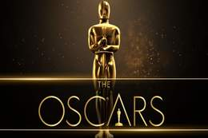

A Grammy Award (stylized as GRAMMY, originally called Gramophone Award), or Grammy, is an award presented by The Recording Academy to recognize achievements in the music industry. The annual presentation ceremony features performances by prominent artists, and the presentation of those awards that have a more popular interest. The Grammys are the second of the Big Three major music awards held annually (between the American Music Awards in the Fall, and the Billboard Music Awards in the Summer).
It shares recognition of the music industry as that of the other performance awards such as the Academy Awards (film), the Emmy Awards (television), the Tony Awards (theater), and the Game Awards (video games).
The first Grammy Awards ceremony was held on May 4, 1959, to honor and respect the musical accomplishments by performers for the year 1958. Following the 2011 ceremony, the Academy overhauled many Grammy Award categories for 2012.
91st Academy Awards: Best Picture

The Academy Awards, also known as the Oscars, are a set of awards for artistic and technical merit in the film industry, given annually by the Academy of Motion Picture Arts and Sciences (AMPAS), to recognize excellence in cinematic achievements as assessed by the Academy's voting membership.
The various category winners are awarded a copy of a golden statuette, officially called the "Academy Award of Merit", although more commonly referred to by its nickname "Oscar".
The award was originally sculpted by George Stanley from a design sketch by Cedric Gibbons. AMPAS first presented it in 1929 at a private dinner hosted by Douglas Fairbanks in the Hollywood Roosevelt Hotel
MasterChef US Season 9 Winner
Season 9 of the American competitive reality TV series MasterChef premiered on Fox on May 30, 2018.
Gordon Ramsay and Aarón Sanchez return from last season as judges, while former judge Joe Bastianich returns to the show as the third judge, replacing Christina Tosi. This season introduced a new format to the show, as the three judges each selected eight contestants to give aprons to, and then the judges mentor their respective contestants throughout the competition.